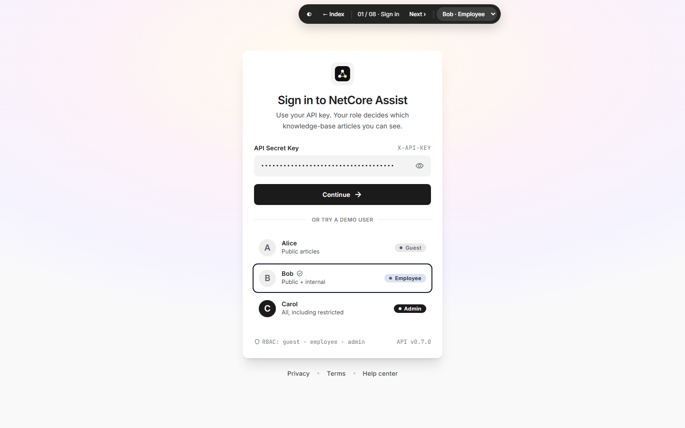

01
Sign in
Authenticate with an API key or pick a demo user; the role decides which KB articles the agent may use.
API
X-API-Key header (all agent endpoints)401 problem on a bad key
Try
- Pick Alice / Bob / Carol
- Clear the key and press Continue (401 message)